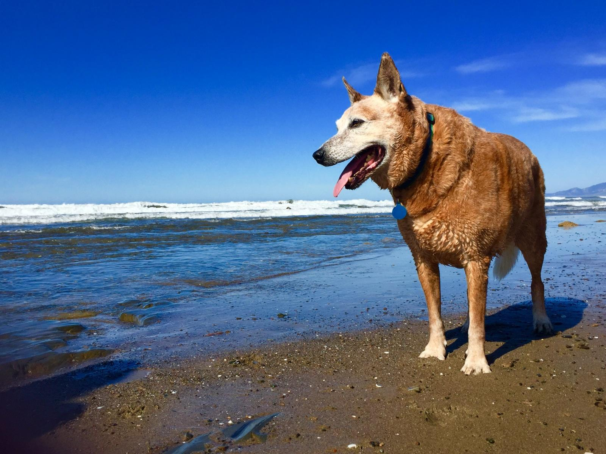

Ranger
I've known Charlie since I was 7 years old, and I'm still going strong at 15! The way Charlie and I play has evolved over the years. When I was young Charlie and I would spend hours at the beach playing fetch. I can still play ball, but Charlie is much more gentle with his throws and is mindful when it is time to call it a day.
We also have had lots of fun over the years going on hikes. Charlie knows as a fellow in my golden years, I can be a bit slow along the trails and get thirsty easily. Charlie is always patient and has water available so I can hydrate along the way.
Gretchen
I'm Ranger's sister, Gretchen. I too have enjoyed many long afternoons at the beach with Charlie, although I'm more inclined to herd my brother than catch a ball. I am 12 years old and have a collapsed lung, so Charlie takes extra good care to make sure I can keep up with him and Ranger on our adventures.

Maddie
Hi my name is Maddie! I'm a sweet, 6 year old pitbull who loves to be outside and go on hikes. I was a bit difficult to manage on a leash when Charlie and I first met, but he was patient yet firm with me. Now it is easy for everyone to take me on adventures! I love getting all my energy out hiking with Charlie so I can be super lazy the rest of the day. And yes, this is how I usually look after one of our hikes.
Peter
Hi I'm Peter! I'm a 5 year old bundle of love. I spend a lot of time with Charlie because he watches me when my dad Dan goes out of town. I am generally a mellow dog who loves to get in one walk a day. If I don't get it, you can tell! Charlie loves to go on walks too, so he genuinely enjoys taking me out around the block. My dad is very grateful that Charlie takes such good care of me when he is on vacation.

Lucy
Hi my name is Lucy! I am spirited 2 year old who loves to hike and run in the woods. When Charlie was living in Oakland, he would take me out to the beautiful redwood forests. I tend to get aggressive with other dogs, so Charlie stays vigilent when we are out together and keeps me in check. I know he does this both for mine and the other dog's safety and well-being. I appreciate that he does so I can continue to enjoy the great outdoors.

Des
When my dad Nels got a job that required a long commute, I needed someone to help take me out during the middle of the day. Even though I am a hunting dog, I am known to be very sensitive. Charlie was a great companion to me when I was struggling with the long days apart from Nels. Charlie took me on long runs so I could be distracted by nature and get some fresh air to keep my spirits up.